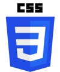
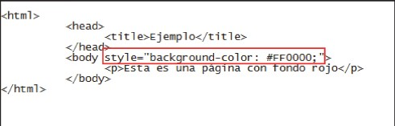
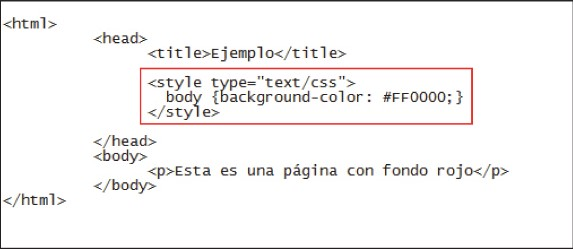
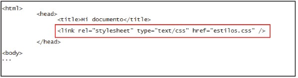
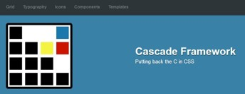

Fundamentos de CSS

Segun Celaya Luna(2014) CSS son las siglas de (Cascading Style Sheets) "Hojas de estilo en cascada" y parten de un concepto simple pero muy potente, basicamente se trata de aplicar a documentos principalmente HTML estilos por ejemplo (Colores, formas , margenes etc..)preferiblemente de forma masiva.
Existen tres formas de aplicar estilo mediante CSS a tus documentos HTML
- Mediante el atributo style:
El atributo style pertenece a CSS pero se inserta dentro de las etiquetas HTML directamente.

Ejemplo. - Mediante etiqueta style
La etiqueta style tambien se puede usar para dar estilo mediante CSS.

Ejemplo - Mediante un archivo CSS externo
Esta es la forma mas recomendada para definir los estilos ya que ofrece una gran versatilidad al momento de dar stilos por ejemplo de manera masiva, ofrece una manera mas practica de administrar los estilos aplicados al sitio web solo es necesario definir un archivo de texto con la extension .CSS

Para referenciar el archivo .CSS en cada archivo HTML solo es necesario referenciarlo dentro del encabezado.
Ejemplo.
Frameworks CSS

Segun Wikipedia (2020) un framework de CSS en una biblioteca de estilos genericos que puede ser usada para la implementacion de sitios web, dichas colecciones puedes ser usadas para dar un toque personalizado a una pagina partiendo de estilo ya definido por otros desarrolladores, los frameworks pueden hacer que el desarrollo de sitios web sea mucho mas facil y rapido ya que ofrecen definiciones de estilos personalizadas que ahorran miles de lineas de codigo.
Los frameworks se clasifican en:
- Frameworks multiproposito
Proporcionan un conjunto de utilidades variadas utiles para distintos aspectos del desarrollo de un sitio web
- Proposito especifico
Estan orientados a proporcionar herramientas para un proposito determinado